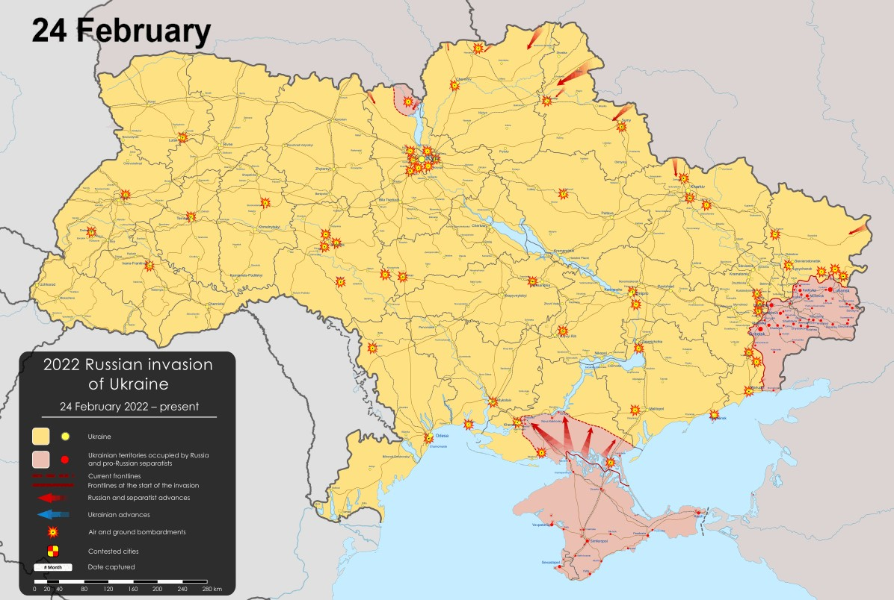
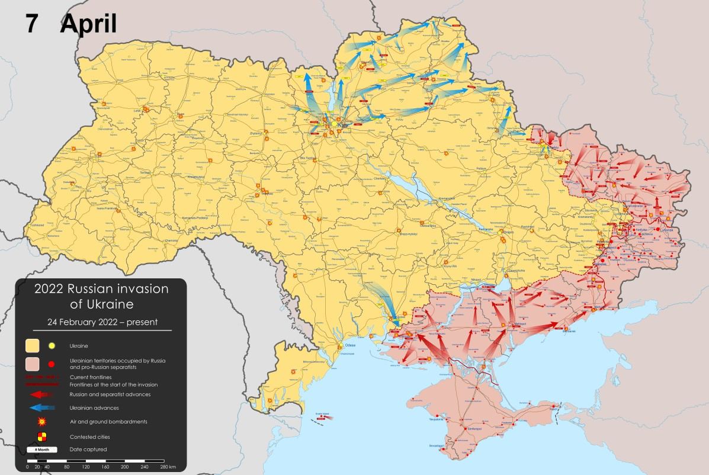
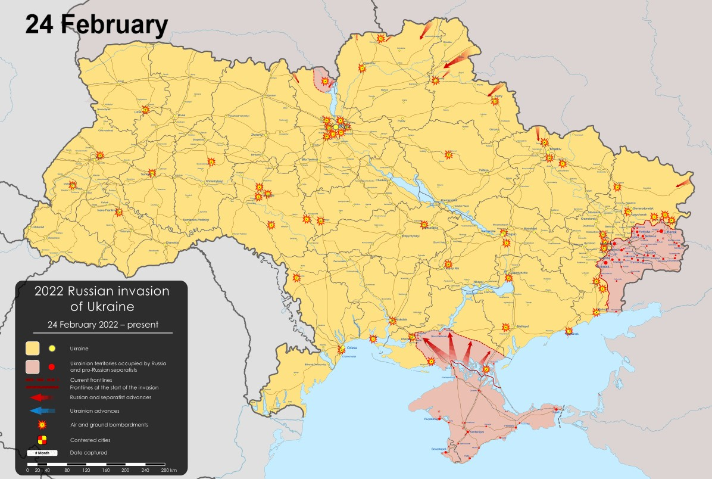
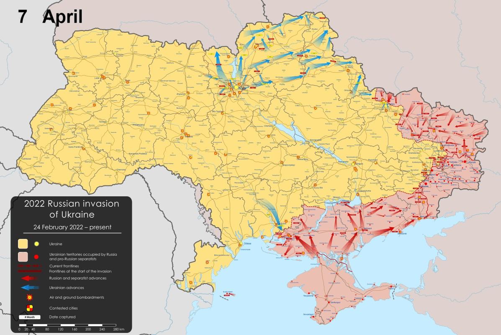

Timeline of the War
Stage One of the Russian Invasion of Ukraine, February 24th-April 7th:

Stage Two of the Russian Invasion of Ukraine, April 8th-August 21st:

Pages
Quiz
Back to Main Page
Stage One of the Russian Invasion of Ukraine, February 24th-April 7th:

Stage Two of the Russian Invasion of Ukraine, April 8th-August 21st:
